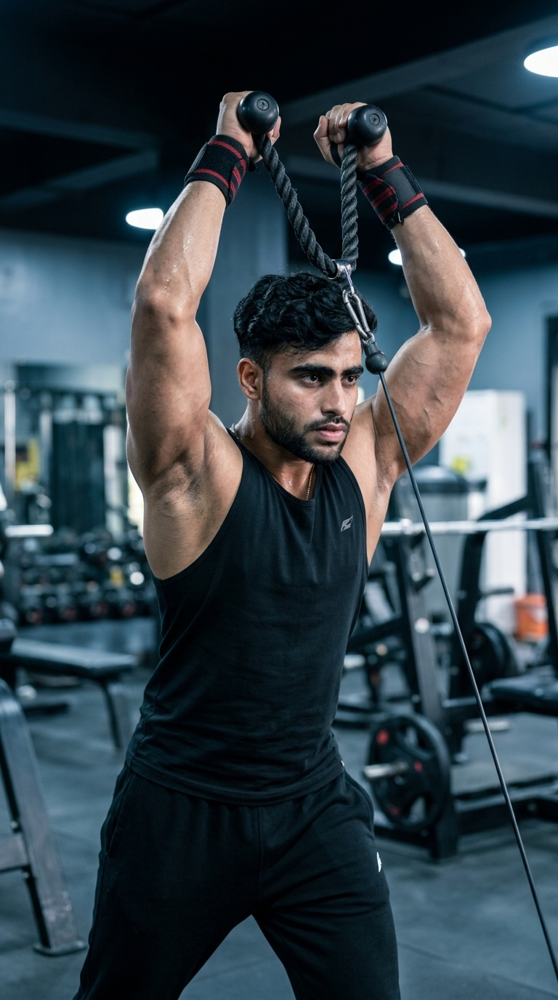

Primary Muscle
Triceps Brachii
Build Bigger Triceps, Stretch the Long Head & Maximize Muscle Growth with Constant Cable Tension
The Overhead Cable Triceps Extension is one of the best isolation exercises for developing the long head of the triceps. Performing the movement with your arms overhead places the long head under a deep stretch while the cable provides constant resistance throughout the entire range of motion. This exercise helps increase upper-arm size, improve elbow extension strength, and build balanced, well-defined triceps for both beginners and experienced lifters.

Triceps Brachii
Cable Machine
Intermediate
Isolation
Discover which muscles are primarily responsible for the Overhead Cable Triceps Extension and how the supporting muscles stabilize your shoulders, elbows, and wrists while the overhead position places greater emphasis on the long head of the triceps.
Long Head (Primary), Lateral & Medial Heads
Elbow Stabilizer
Grip & Wrist Stability
Shoulder Stabilizer
Discover how the Overhead Cable Triceps Extension increases triceps size, emphasizes the long head, improves elbow extension strength, and builds stronger arms through constant cable resistance.
The overhead arm position places the long head of the triceps under a deep stretch, helping stimulate greater muscle growth and improving overall upper-arm size.
Performing the exercise overhead allows your elbows to move through a larger range of motion, promoting more complete triceps activation throughout each repetition.
The cable machine provides continuous resistance during both the lifting and lowering phases, encouraging consistent triceps engagement and muscle growth.
Stronger triceps enhance elbow extension strength, improving performance in compound exercises such as the bench press, overhead press, and dips.
By emphasizing the long head while also training the lateral and medial heads, this exercise contributes to fuller, more balanced triceps development.
Adjustable cable resistance, smooth movement, and constant tension make the Overhead Cable Triceps Extension an excellent choice for intermediate and advanced lifters focused on hypertrophy.
Follow these step-by-step instructions to perform the Overhead Cable Triceps Extension with proper posture, controlled elbow movement, and a full range of motion to maximize long head activation and triceps development.
Attach a rope handle to the low pulley of a cable machine and select a weight that allows you to perform every repetition with a full range of motion and proper technique.
Use a lighter weight first to learn the movement before increasing resistance.
Grip the rope with both hands, turn away from the machine, and bring the rope behind your head. Stand in a staggered stance with your core engaged, elbows bent, and pointed forward.
Keep your elbows close to your head throughout the exercise to maximize triceps activation.
Extend your elbows until your arms are nearly straight overhead while keeping your upper arms stationary. Focus on driving the movement with your triceps instead of your shoulders.
Avoid flaring your elbows outward as you press the rope overhead.
Pause briefly at the top with your elbows fully extended and contract your triceps as hard as possible before lowering the weight.
Hold the contraction for one second to improve your mind-muscle connection.
Slowly bend your elbows to return the rope behind your head until you feel a comfortable stretch in the triceps. Maintain tension throughout the movement and repeat for the desired number of repetitions.
Control the lowering phase and avoid moving your shoulders or arching your lower back to keep the tension on your triceps.
Avoid these common technique mistakes to maximize long head activation, maintain proper form, and perform the Overhead Cable Triceps Extension safely and effectively.
Lifting excessive weight often causes poor technique, incomplete elbow extension, and excessive body movement, reducing triceps activation.
Select a weight that allows you to perform every repetition through a full range of motion while maintaining strict form.
Allowing your elbows to drift outward shifts tension away from the triceps and places unnecessary stress on the shoulder joints.
Keep your elbows close to your head throughout the entire movement and move only at the elbow joint.
Leaning backward to lift the weight places excessive stress on the lower back and reduces the effectiveness of the exercise.
Brace your core, maintain a neutral spine, and keep your ribs down throughout each repetition.
Performing fast, uncontrolled repetitions reduces time under tension and prevents the triceps from working through their full range of motion.
Lift and lower the weight slowly, pause at full extension, and control the stretch on every repetition.
Apply these expert coaching cues to improve your Overhead Cable Triceps Extension technique, maximize long head activation, and get the greatest benefit from every repetition.
Your upper arms should remain stable throughout the exercise. Only your forearms should move as you extend and bend your elbows.
Stable elbows keep the tension on your triceps instead of shifting it to your shoulders.
Lower the rope until you feel a comfortable stretch in the long head of the triceps before pressing the weight back overhead.
A full stretch followed by a strong contraction leads to better muscle development.
Raise and lower the weight slowly while maintaining constant cable tension. Avoid rushing through the movement or letting momentum do the work.
The lowering phase is just as important as the lifting phase for maximizing muscle growth.
Keep your core engaged and maintain a neutral spine to prevent your lower back from arching during the exercise.
A stable torso allows the triceps to do all the work while reducing unnecessary stress on your lower back.
Progress from learning the Overhead Cable Triceps Extension with light resistance to performing heavier, more challenging sets while maintaining proper overhead positioning, strict elbow control, and full triceps extension.
Begin with a light weight to master your stance, overhead arm position, and elbow alignment before increasing the resistance.
Neutral spine, braced core, elbows close to your head, and smooth, controlled movement.
Lower the rope under control to achieve a comfortable stretch in the triceps before extending your arms to full lockout on every repetition.
Full stretch, complete elbow extension, controlled tempo, and continuous cable tension.
Once your technique is consistent, gradually increase the resistance while maintaining proper overhead posture, strict elbow positioning, and complete triceps contraction.
Progressive overload, strict form, controlled repetitions, and consistent long head activation.
Increase training intensity by incorporating paused repetitions, slow eccentrics, drop sets, unilateral cable extensions, and higher training volume while maintaining perfect technique.
Advanced intensity techniques, full range of motion, precise execution, and maximizing long head stimulation on every repetition.
Find answers to common questions about Overhead Cable Triceps Extension technique, muscles worked, proper form, training frequency, and how to maximize long head triceps development.
The Overhead Cable Triceps Extension primarily targets the long head of the triceps while also activating the lateral and medial heads. Your shoulders, forearms, and core assist by stabilizing your body throughout the movement.
Raising your arms overhead places the long head of the triceps under a greater stretch, which can increase muscle activation and contribute to greater upper-arm development.
Both attachments are effective. A rope attachment usually allows a more natural grip and slightly greater range of motion, while a straight bar may feel more stable for some lifters. Use the option that feels most comfortable and allows proper form.
Yes. Beginners can perform this exercise safely by starting with light resistance, maintaining proper elbow position, and focusing on controlled repetitions before increasing the weight.
For muscle growth, perform 2–4 working sets of 8–15 repetitions while maintaining a full range of motion, controlled tempo, and proper technique on every repetition.
Yes. Because the long head makes up a large portion of the triceps, regularly performing Overhead Cable Triceps Extensions with progressive overload, proper nutrition, and adequate recovery can contribute to stronger, thicker, and more defined upper arms.
Explore other triceps exercises that complement the Overhead Cable Triceps Extension and help you build stronger, bigger arms using different movement patterns, attachments, and training variations.


Continue building stronger, bigger triceps with step-by-step exercise guides covering proper technique, muscles worked, common mistakes, expert coaching tips, and progression strategies for every fitness level.